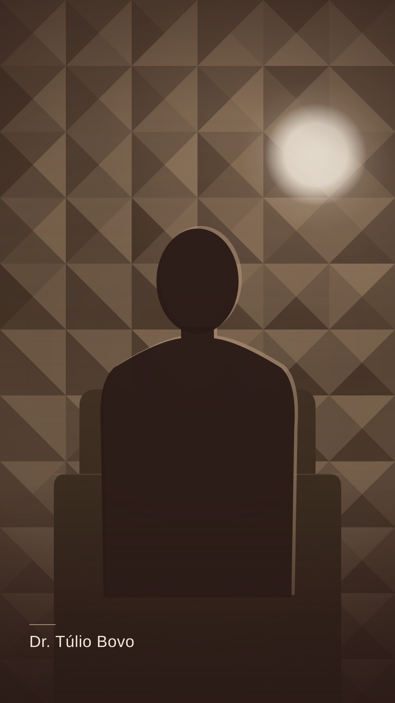

Quem eu sou — gravado no estúdio JacarandáDr. Túlio Bovo
Cansaço, peso e hormônio — o que parou de funcionar.
Exame normal e corpo que não está bem: eu vejo isso toda semana. É aí que a investigação começa.
CRM-SP 000000 [PENDENTE] Ver página